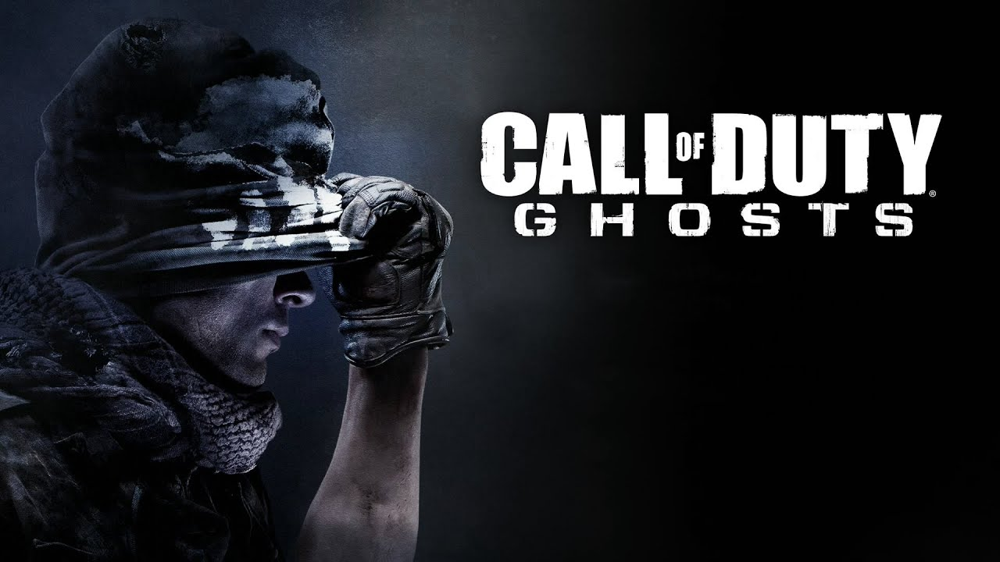

Desde pequeño me a gustado jugar videojuegos, principalmente de accion, sin embargo, hay otros que no son de dicha categoria y de igual manera me gustan mucho.
A continuacion les mostrare algunos de mis favoritos:
- 1. Call Of Duty 
- 2. EAFC (24 y 25)
- 3. Minecraft
Call Of Duty es un juego al que le tengo mucho cariño, puesto que, fue de los primeros juegos de accion que realmente llamaron mi atencion.
EAFC (anteriormente llamado FIFA) es un juego de futbol que llevo jugando aproximadamente unos 15 años. Este juego me entretiene mucho, porque tu puedes decidir que hacer, es decir, te dan a elegir si quieres ser un jugador, un director tecnico, etc.

Minecraft es un juego de mundo abierto en donde puedes crear o construir lo que quieras. Aqui no existen los limites de creatividad, ya que hay un sin fin de cosas por hacer en los "mundos". Personalmente, este tipo de juegos me gusta mas jugarlo con amigos.